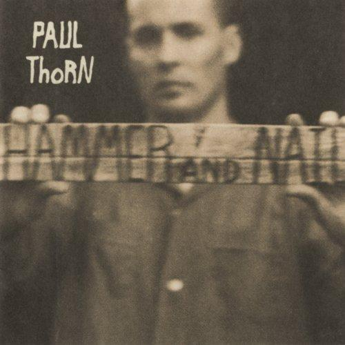

Paul Thorn and his 800 Pound Jesus
26 Mar 2019 · 9 min read

I'd been aware of Paul Thorn for some time, but didn't really become a fan until I saw him live last summer at The Ark in Ann Arbor. I convinced an old University of Michigan roommate to come with me while I was in town, as an opportunity to catch up, but we were both caught off guard by how much we loved Thorn's show.
I've been listening to Thorn's recordings regularly since then, and can now bear witness to a great catalog that stands up to deep and repeated listening.
Musically Thorn reminds me of Delbert McClinton and a few other artists who have somewhat belatedly been collected under the Americana banner. He has a great group of regular bandmates playing drums, bass, guitars and keyboards, and they are more than capable of drawing on most American music traditions – blues, folk, rhythm'n blues, soul, country, rock'n roll, gospel and so on – to conjure up a strong, effective, varied and emotive backing for whatever song Thorn has chosen to deliver.
Thorn's voice seems a force of particularly American nature. It's not pretty or showy, and wouldn't ever be caught dead on one of the insipid television “talent” shows that are endlessly advertised these days, but it is wonderfully expressive and deeply layered, like a powerful piece of wood that has been torn from the depths of some aged tree, with complex and unique grains that bely its troubled but ultimately enduring heritage. No matter what he's singing at the moment, listen closely, and you can hear ancient American voices echoing down over the generations, distilled into something as complex and satisfying as a fine aged whiskey.
As a musical ensemble, Thorn and company are as reminiscent of The Band as anyone else, making a similar musical stew out of their mongrel American musical heritage, and mixing rhythm instruments, keyboards, guitars and rough vocals with little respect for established genres, but with endless respect for their material.
Which brings us to the subject of Thorn's songs. Almost all of his material is original, and he seems to write about and for a mostly white, older, rural/rust belt sort of audience. And most of his songs are remarkably simple on the surface.
And yet… listen closely to his best compositions and he always seems to be speaking to us on multiple levels. In this he reminds me of no one less than Ray Davies and The Kinks. For just as Davies refused to pander to American audiences, and remained steadfastly British, and sang about forgotten or vanishing English characters and traditions, Thorn seems on just as contrarian a mission to sing about American scenes and characters that many of us might just as soon fly over or forget. And he does this with just as much self-awareness as Davies had, letting us know in subtle ways – such as the name of his label, Perpetual Obscurity Records – that he's fully aware that there is a broader, younger, hipper, more lucrative audience out there. It's not that he doesn't know about it – he's just not interested in it.
This song from his first album, Hammer and Nail, is as good an introduction as any to Thorn's world. Unfortunately the great original recording – worth seeking out – seems not to be available on the usual streaming services. The best way to correct this problem is to buy the CD. But listen along using whatever device and sources you have available, and let's pay attention to the words.
I saw a garage sale,
Pulled up in the yard,
Found a statue of Jesus,
That was eight feet tall.
He held out his arms
And he seemed all alone,
So I loaded him up
And I drove him home.
Simple, right? But look at what Thorn's done here. He's placed us in a particular slice of our American landscape. If you are only used to life in one of our big cities, then you probably feel like you've been dropped onto an alien planet, one populated with pickup trucks, garage sales full of castoff junk, and outsized religious statuary.
There's also an element of comedy here, right? A giant statue of Jesus being bought and sold at a garage sale? It's hard to conjure up the scene without evoking an amused smile.
But at the same time there's also a sense of pathos. Our main character is without a companion, stopping at garage sales, projecting his own feelings of isolation onto an inanimate religious figure. I mean, it sounds kind of sad, doesn't it?
At the same time, though, this reference to the statue of Jesus holding out his arms and seeming all alone begins to lend this figure its own independent identity, as if it was not just an image of something else, but was actually something or someone on its own.
There you go. Four paragraphs of mine to unpack Thorn's first eight lines.
Let's see what happens next.
Out by my driveway he
Looks down the street,
With long hair and sandals made
Of rebar and concrete.
I painted him white
With a long purple robe,
He's a rock of ages
On our gravel road.
Again, there's a comic element. This is not a conventional, pious, stained-glass image of Christ, but a figure with long hair and sandals, not to mention a purple robe. And he's made of rebar and concrete, not marble. We're not on a Rick Steves tour of European art treasures here, but a Paul Thorn tour of American life outside the city limits – arguably just as illuminating, especially if we're more interested in the 21st century than the 16th.
And then, of course, there's the priceless last line: “He's a rock of ages on our gravel road,” mixing the high and the low, the metaphorical idea of a rock of ages and the literal hunk of concrete now resting next to this guy's driveway, the timeless nature of an unbreakable rock alongside the scattered gravel making up the road on which our main character resides.
And now we come to the first delivery of the song's chorus.
He's an eight-hundred pound Jesus,
Standing taller than a tree.
He's an eight-hundred pound Jesus,
A bigger man than you or me.
Again we find the comic mixed with the epic, and again we find more playful ambiguity: “a bigger man than you or me.” I mean, of course, this 800 pound, eight-foot figure is literally larger than either the singer or the listener, but we're also referring to the stature of his character, aren't we? But then, is it the character of the person/god the statue is meant to represent, or is it the character of the statue itself?
Let's see how the next chapter unfolds.
I thought losin' my job was
The end of the world,
'Til my best pal
Ran off with my best girl.
I felt suicidal
With no real friends,
So I walked outside
With a rope in my hand.
Wait a minute, is this still a joke? It's getting awfully real, isn't it? There are no comforting double messages now. Carrying a rope outside while feeling suicidal? That's pretty explicit, and there's only one thing it might mean.
Out by that statue,
There's a big oak tree,
So I stood on his shoulders
And I counted to three.
I had every intention
Of buyin' the farm,
But when I jumped off,
He caught me in his arms.
How are we to interpret this? It's hard to believe a guy trying to hang himself could accidentally fall into the arms of a concrete statue. Is this a modern miracle?
At this point we should note that, for a song referencing the central figure of Christianity, it is decidedly odd that our singer has not once referred to the religious/historical figure of Christ himself, but has instead focused only on a particular statue of this personage. Unlike so many others, he is not claiming to have been spiritually saved by Christ, but physically saved by the 800 pound statue of Christ sitting in his yard. And so, at this point in the song, it feels like we have entered the realm of magical realism, akin to a Guillermo del Toro film such as Pan's Labyrinth and The Shape of Water.
We're now treated to another round of the chorus, and then to the concluding verse.
I wanted to return
The favor to him,
'Cause I never had
A more solid friend.
So I planted some flowers
All around his feet,
And I bought him a flock
Of ceramic sheep.
So now, after this brush with death, saved only by the magical actions of a chunk of rebar and concrete, we are returned to the comforting, familiar bucolic scene of random religious statuary scattered across our rural countryside, observed once again through the singer's wry lens, playing with the double meaning of a “solid friend.”
So what are we to make of this song as a whole? What is it about?
Before attempting to answer this question it might help to know that this towering concrete Jesus really exists, and is happily owned by Paul, having been passed down to him from his father. Thorn says about it, “Every time I look at it makes me smile.”
And this is what makes Thorn's musical world so damned compelling. Because he starts with real people and events, and then makes up these little musical stories about them, allowing us to look down on his characters from an ironic distance, while at the same town identifying with them so strongly that we can't help leaving with an enhanced sense of our shared humanity.
So what is this song about? Let me try to give you some approximation of the thoughts and feelings I come away with.
Being human is hard. People do suffer reversals of fortune. Humans do sometimes feel lonely and isolated. They do sometimes feel tempted to take their own lives. And a belief in something larger than themselves is often what makes the difference. And such beliefs do often seem silly when looked at from an outsider's perspective. But hey, we're all on the inside as well as the outside, all in need of a solid friend at times, all in need of something to believe in, all in need of stories to tell ourselves, all leading lives not worth living if they're bereft of some form of enchantment.
That's an awful lot of meaning to pack into a track clocking in at just under three minutes.
If you're not yet familiar with Paul Thorn and his work, then I urge you to see him in person and listen in depth to his catalog.
Just don't make the mistake of taking him at face value. Despite his obscurity, he's an artist who punches well above his weight.
Thanks for reading! If you’d like a convenient short URL to link to this piece, you can use pract.org/s/pth8pj.html. Or feel free to simply share this piece using one of the social media buttons below!